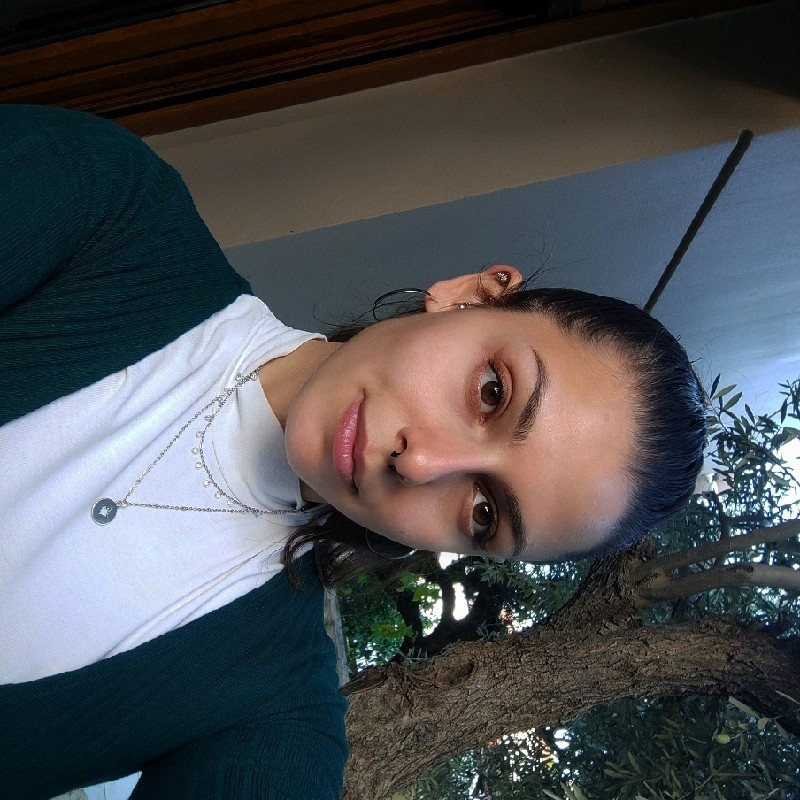

About me
 I am currently a Master's student at the Utrecht University, in the Game and Media Technology programme, and the estimated date of my graduation is August 2025.
On November 2024 until February 2025, I will be a Teaching Assistant for the course "Computer Animation" at the Utrecht University. This course leverages one of the few Motion Capture and Virtual Reality labs worldwide of this scale, under the supervision of Dr.Zerrin Yumak.
I have a Bachelor's degree in Computer Science at the University of Crete, in which I graduated 8th in the class of July 2022.
I had the opportunity to work in the Full-Stack Developer position at BusinessCode from November 2022 until November 2023, after which I started being a student. The first objective was to develop a Java application which facilitated the parsing and database integration of large scale Excel and CSV files. The completion of this objective led me to work with a team of other people on the company's User Interface using online crawler to extract information from clients' websites and integrate them.
During the last year of my Bachelor's studies, I was working in OramaVR at first as a Unity Developer to create a remastered version of a medical operation, and later as a 3D Model Developer for the various medical projects of the company. Due to my passion for motion capture and animations, I completed my thesis under the supervision of George Papagiannakis on a user study about the most optimal online motion capture tool and the results' integration onto Unity on various characters. To implement this integration, I developed a Unity tool, which is an Automated Animator Controller with the purpose to apply the animations to any given 3d skeleton, and play a random set of animations.
A more detailed description about my experience and skills are in my CV.